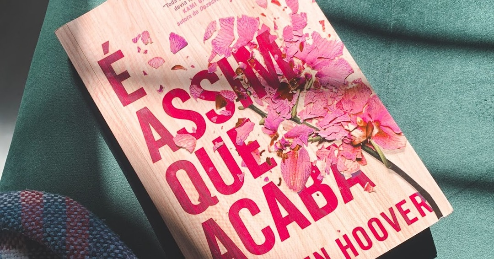
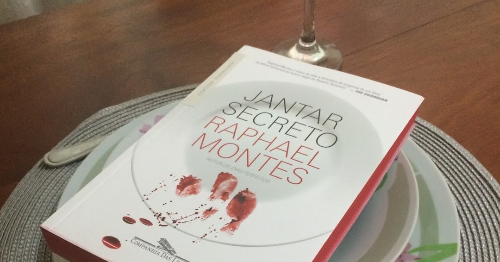

Se Não Fosse Você - Colleen Hoover
02 de Maio de 2025 10:23

Muito sentimental, e acho que foi por isso que me pegou tanto. Uma obra que aborda o luto com realismo, trazendo os pontos de vista de uma mãe madura e uma filha imatura. A relação entre as duas é marcada por conflitos e falta de diálogo. Mas a reconstrução do vínculo entre elas é comovente, e a história traz reflexões profundas sobre família, dor, amor e maternidade.
Leia Mais...
O Vilarejo - Raphael Montes
19 de Abril de 2025 09:27
Uma história curta para ler de uma vez só. Esse livro reúne sete contos macabros que possuem uma ligação e representam cada um dos sete pecados capitais, personificados pela própria ignorância humana. Traduzido dos cadernos de Elfrida Pimminstoffer, um vilarejo em algum lugar isolado, passa por uma maldição onde os moradores enfrentam a fome e o dessespero.
Leia Mais...
Dias Perfeitos - Raphael Montes
18 de Abril de 2025 10:11

Esse livro só dá ódio (De tão bom). Acompanhamos a história de Téo, um estudante de medicina introvertido e quieto. Ele não nutre sentimentos por ninguém. Nem por sua mãe paraplégica que necessita de seus cuidados. Sua vida muda quando ele conhece Clarice, uma estudante de história e metida a roteirista. E a partir de então, Téo desenvolve uma obsessão doentia por ela. E pensar que Clarice passou por tudo isso por conta de um churrasco!
Leia Mais...
Pequeno Manual Antirracista - Djamila Ribeiro
17 de Abril de 2025 10:30

Um livro de extrema importância que é um choque de realidade, feito para abrir nossos olhos para uma reflexão profunda, que estimula a construção de práticas antirracistas. Escrito pela filósofa e ativista Djamila Ribeiro, esse livro curto e direto ao ponto vai apresentar 10 tópicos essenciais para ajudar as pessoas a adotarem uma postura antirracista.
Leia Mais...
Uma Família Feliz - Raphael Montes
16 de Abril de 2025 11:58

Um começo super tranquilo que daria tudo para ser uma história de amor. A clássica "família de margarina" aparentemente perfeita, com a casa perfeita, o marido e a esposa perfeita, os filhos perfeito, tudo era muito perfeito, muito Barbie. Eva vivia a vida que sempre sonhou. Até que sua vida desmorona quando quando se depara com a gravidez e a pressão da maternidade.
Leia Mais...
O Lado Feio do Amor - Colleen Hoover
14 de Abril de 2025 10:11

Essa é polêmica! Esse livro é intitulado pelos fãs como "O pior livro da Colleen" e ao meu ver, eles não estão totalmente errados. Embora o livro queira transmitir que o amor pode ser doloroso e imperfeito, o que ele traz é uma romantização de comportamentos tóxicos e machistas, reforçando estereótipos de submissão feminina.
Leia Mais...
A Paciente Silenciosa - Alex Michaelides
13 de Abril de 2025 19:31
Após cometer o assassinado de seu marido, Alicia Berenson, uma artista renomada, se recusa a falar qualquer coisa, deixando suspeitas e mistérios não resolvidos sobre o ocorrido. E o terapeuta Theo Faber está obcecado em descobrir o motivo da violência e do silêncio quando a paciente é internada na clínica psiquiátrica em que ele trabalha. Só ela sabe o que aconteceu. Só ele pode fazê-la falar. A única pista para resolver esse caso, é uma de suas obras de arte chamada "Alceste", inspirada na mitologia grega. Conforme Theo se aprofunda no passado de Alicia e investiga o assassinato, ele também revela sua própria personalidade, e traz a tona segredos e verdades cruas.
Leia Mais...
A Biblioteca da Meia-Noite - Matt Haig
09 de Abril de 2025 12:35

Se eu pudesse resumir em uma palavra, seria: Arrependimento. Para mim, esse aqui não rolou! Eu entendi a mensagem que o livro quis passar, a premissa é boa, mas a abordagem é o que frustra o leitor. Acho que esse livro só vendeu tanto por conta que brilha no escuro, por que outra explicação não tem! Foi um mero surto coletivo. Essa bomba me deu tanto ódio que eu abandonei a leitura um pouco antes e fui pesquisar o final (Era melhor não ter pesquisado por que eu fiquei com mais ódio ainda). ALERTA DE SPOILER.
Leia Mais...
O Casal que Mora ao Lado - Shari Lapena
03 de Abril de 2025 12:48
Nesse livro aqui a idéia até que é boa, o clima de investigação até que é interessante, porém achei o enredo bem podre. Se eu pudesse dar uma nota seria dó. Mas é um livro que eu recomendo, recomendo passar longe. ALERTA DE SPOILER.
Leia Mais...
É Assim Que Acaba - Colleen Hoover
02 de Abril de 2025 11:30

Lily Bloom, uma floriculturista que ama o que faz, se muda para Boston para começar uma nova vida e abrir o seu negócio. Como consequência, ela acredita que encontrou o amor verdadeiro. Mas as coisas se complicam e ela se encontra com um relacionamento tóxico e difícil.
Um clichê doce, e fofo, que também tem suas problemáticas. Uma ótima leitura para quem procura uma boa trama que aqueça o coração.
Leia Mais...
Jantar Secreto - Raphael Montes
28 de março de 2025 13:28

Enigma Carne de Gaivota: “Um sujeito estava andando pela rua quando deparou com um restaurante que vendia carne de gaivota. Pediu a carne, comeu, foi para casa e se matou. Por quê?”.
Leia Mais...
Suicidas - Raphael Montes
27 de março de 2025 13:03

Alessandro, tem o sonho de ser um escritor, logo dentro do porão onde os jovens estão, ele descreve tudo que está acontecendo. Então, o decorrer da história acontece por meio de seus manuscritos. O caso é investigado um ano após a tragédia, conduzido pela delegada Diana Guimarães, que se junta com as mães dos jovens para recompor a hisótira e esclarecer tudo de vez. Só que para isso, elas terão de recordar todos os acontecimentos bizarros daquela noite.
Leia Mais...
Verity - Colleen Hoover
25 de março de 2025 19:19

Em Verity, de Colleen Hoover, acompanhamos a história de Lowen Ashleigh, uma escritora que luta para se manter estável após a morte de sua mãe. Até que ela é convidada a concluir uma série de livros inacabada de Verity Crawford, que ficou incapacitada por conta de um acidente. Ao aceitar este novo emprego, ela se muda para a casa dos Crawford para se aprofundar nessa série de livros, antes de dar continuidade a história inacabada. Mas é claro que a medida que ela ingressa ainda mais na vida de Verity, ela acaba descobrindo coisas perturbadoras das quais ela não queria.
Leia Mais...